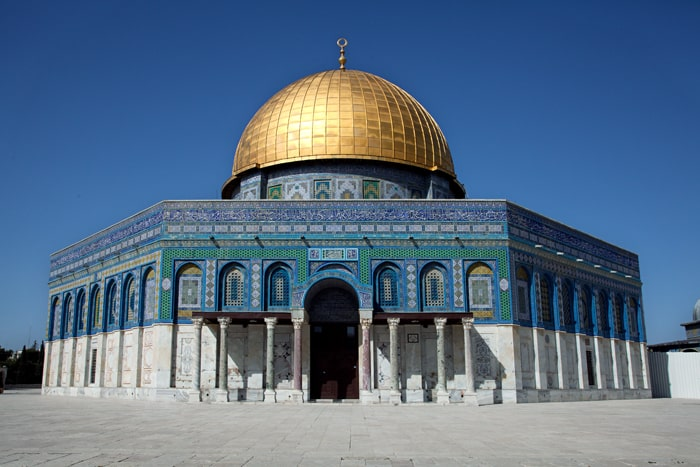
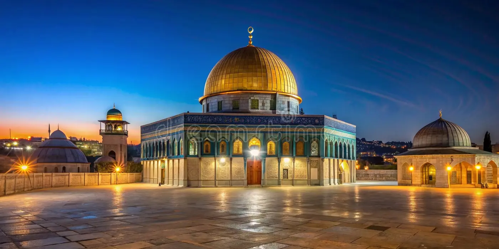
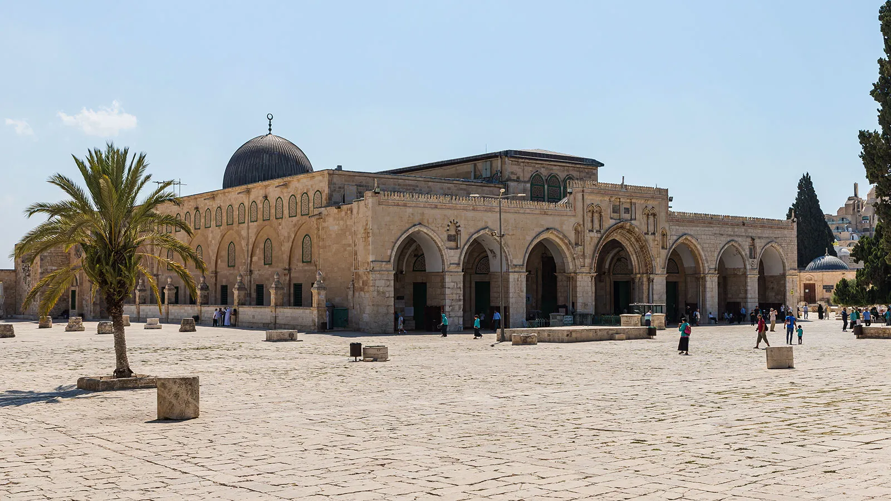

La mosquée Al-Aqsa, située à Jérusalem, est l'un des lieux les plus sacrés de l'Islam. Construite après la conquête de Jérusalem par le calife Umar en 637, elle fait partie du complexe du Haram al-Sharif, qui inclut aussi le Dôme du Rocher. Sa construction a commencé au VIIe siècle, et elle a été rénovée plusieurs fois au cours des siècles sous différents califes et dynasties, dont les Omeyyades, les Abbassides, les Fatimides, les Ayyoubides, et les Ottomans. Al-Aqsa est le troisième lieu saint de l'Islam après la Mecque et Médine, et elle est associée à l'ascension du prophète Muhammad. Depuis l'occupation israélienne de Jérusalem-Est en 1967, le site a été au cœur de tensions politiques et religieuses, notamment dans le cadre du conflit israélo-palestinien. Aujourd'hui, Al-Aqsa reste un lieu de prière et un symbole de foi et d'identité pour les musulmans.
Touchez la photo pour voir la video
BIENVENUE A LA MOSQUEE AL-AQSA
HISTORIQUE

LES MERVEILLES DE LA MOSQUEE AL-AQSA
La mosquée Al-Aqsa est un lieu sacré comportant plusieurs merveilles. Parmi elles, le Dôme du Rocher, symbole de Jérusalem, est lié à l'ascension du prophète Muhammad. L'architecture de la mosquée, influencée par différentes dynasties, est un mélange d'éléments islamiques qui ajoutent à sa beauté. La mosquée est aussi le lieu de l'événement du Miraj, où Muhammad aurait prié avec les prophètes avant son ascension. Les mosaïques, les décorations artistiques et les portes historiques témoignent de son riche patrimoine. Les minarets et la grande cour intérieure renforcent son rôle central dans la prière et la spiritualité islamique
